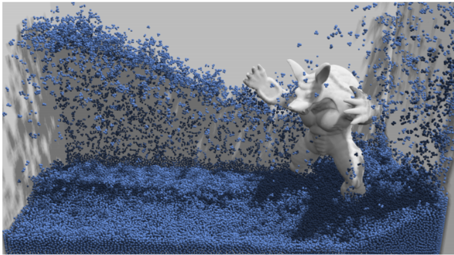
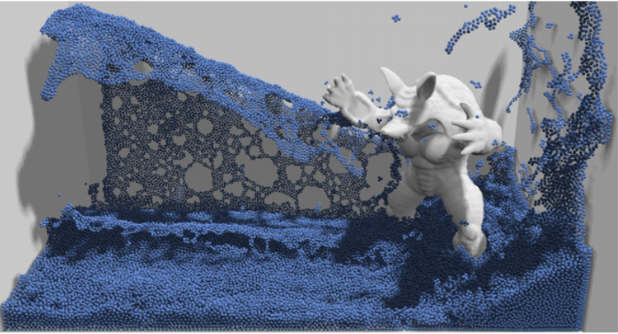

We will create a fluid simulation based on particle positions in C++ and provide a video simulation of the effects we achieved.
The problem we are trying to solve is the simulation of fluid motion.
This is challenging because there are many factors involved in the fluid movement such as force, viscosity, incompressibility. It is also computationally expensive, so we attempt to be efficient. In the setting of this project, this will make the project more difficult in that renderings would take a long time, resulting in a difficult debugging process.
This is important because there are many practical applications for fluid simulation. One such application is the usage of it in movies to create increasingly realistic animations. A long term goal would be to be able to create an simulation algorithm that is efficient enough for live rendering so it can be applied in video games or even virtual reality.
People should care about this because this is what enhances their movie experience >:O.
Position Based Fluids PaperWe will use the Soda 349 computers for the project and we will use C++ with OpenGL to code up the project.
We plan to implement the algorithm based on the paper to create fluid simulation, perhaps without viscosity and surface tension.
Our deliverables would be a demo video of water falling onto box and creating waves on the box, ultimately settling down and also screen shots of the water particles at various time steps in a very simple setting and less number of particles. Our goal is to ultimately accomplish a rendering similar to below, but with nothing or something very simple in the box instead of the sculpture and much less particles:
|

|
Hopefully, we would be able to implement water viscosity to create an image as below (but simplified):
|

|
Other stretch goals would include the implementation of surface tension and adding more complex object into the box using ray tracing to calculate intersection and collisions.
Monday 4/18: Begin coding up the algorithm
Friday 4/20: Finish draft of fluid simulation algorithm
Wednesday 4/24: Finish coding. Ideally finish by Tuesday so we can go to office hours. Begin debugging/rendering for the rest of the time.
Monday 5/2: Begin making the animation of fluid motion for the final presentation.